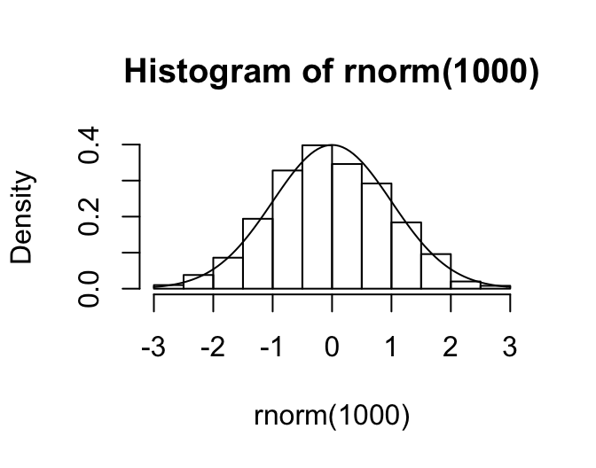
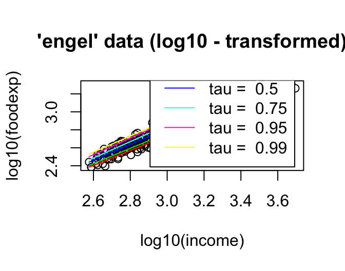
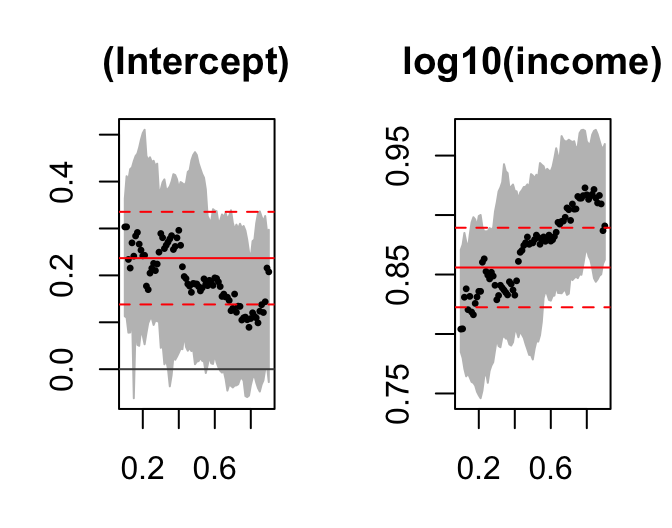

5 Examples of Quantile Regression in R
Author: Lan Wang and Ruosha Li
5.1 Goals
- Fit a quantile regression model in R.
- Test the significance of regression coefficients
- Creat and plot pointwise confidence intervals
5.2 R Package quantreg
- R package quantreg (developed and maintained by Dr. Koenker).
- Documentation: https://cran.r-project.org/web/packages/quantreg/quantreg.pdf
- Type the following in R for installation:
install.packages("quantreg")- Then, load the package by typing:
library(quantreg)
## Loading required package: SparseM
##
## Attaching package: 'SparseM'
## The following object is masked from 'package:base':
##
## backsolve5.3 Fitting linear quantile regression in R
rq(formula,tau,data,method,...)- method=“br” (default): simplex method. Efficient for problems with modest sample size (up to several thousands).
- method=“fn”: Frisch-Newton interior point method; more efficient than simplex for larger sample sizes;
- method=“pfn”: Frisch-Newton with pre-processing (suitable when n is very large).
5.4 Example 1: Fit quantile regression at one quantile level
-Engel food expenditure data used in Koenker and Bassett(1982).
-This is a regression data set consisting of 235 observations on income and expenditure on food for Belgian working class households.
- income: annual household income in Belgian francs
- foodexp: annual household food expenditure
data(engel)
plot(engel, log = "xy", main = "'engel' data (log - log scale)") 
f1<-rq(log10(foodexp) ~ log10(income), tau=0.5, data=engel)
f1
## Call:
## rq(formula = log10(foodexp) ~ log10(income), tau = 0.5, data = engel)
##
## Coefficients:
## (Intercept) log10(income)
## 0.1817 0.8766
##
## Degrees of freedom: 235 total; 233 residual5.5 Example 2: Fit quantile regression at multiple quantile levels simultaneously
plot(log10(foodexp) ~ log10(income), data = engel, main = "'engel' data (log10 - transformed)")
taus <- c(.15, .25, .50, .75, .95, .99)
rqs <- as.list(taus)
for(i in seq(along = taus))
{ rqs[[i]] <- rq(log10(foodexp) ~ log10(income), tau = taus[i], data = engel)
lines(log10(engel$income), fitted(rqs[[i]]), col = i+1) }
legend("bottomright", paste("tau = ", taus), inset = .04, col = 2:(length(taus)+1), lty=1)
5.6 Inference on linear quantile regression in R
summary.rq(fit.obj,{\tblue{se=" "}},...)- se=“rank”: provides CI by inverting a rank score test.
- se=“nid”: estimation of the asymptotic variance assuming non i.i.d. errors (through sparsity estimation).
- se=“iid”: assumes i.i.d. errors in variance estimation.
- se=“ker”: variance estimated using a kernel estimate (Powell Sandwich).
5.7 Resampling methods for inference on quantile regression
summary.rq(fit.obj,{\tblue{se="boot"}},bsmethod="")- bsmethod=“xy”: xy-paired bootstrap.
- bsmethod=“pwy”: perturbing the estimating equation (Parzen, 1994)
- bsmethod=“mcmb”: Markov chain marginal boostrap (He and Hu, 2002), computationally efficient for large n and p.
- bsmethod=“wxy”: generalized bootstrap with unit exponential weights.
- bsmethod=“wild”: wild bootstrap (Feng et al., 2011).
f1<-rq(log10(foodexp) ~ log10(income), tau=0.5, data=engel)
summary.rq(f1, se="boot", bsmethod="xy", R=1000)
##
## Call: rq(formula = log10(foodexp) ~ log10(income), tau = 0.5, data = engel)
##
## tau: [1] 0.5
##
## Coefficients:
## Value Std. Error t value Pr(>|t|)
<<<<<<< HEAD
## (Intercept) 0.18168 0.09977 1.82092 0.06990
## log10(income) 0.87659 0.03426 25.58472 0.00000
=======
## (Intercept) 0.18168 0.10054 1.80698 0.07206
## log10(income) 0.87659 0.03454 25.37751 0.00000
>>>>>>> 51fc4902839de32ad4feabba05a5069b02cc5d50
summary.rq(f1, se="boot", bsmethod="pwy", R=1000)
##
## Call: rq(formula = log10(foodexp) ~ log10(income), tau = 0.5, data = engel)
##
## tau: [1] 0.5
##
## Coefficients:
## Value Std. Error t value Pr(>|t|)
<<<<<<< HEAD
## (Intercept) 0.18168 0.10263 1.77017 0.07801
## log10(income) 0.87659 0.03526 24.85900 0.000005.8 Pointwise confidence intervals
tau.seq=seq(0.1,0.9,0.01)
f2 = rq(log10(foodexp) ~ log10(income),tau=tau.seq,data=engel)
sfm = summary(f2, se="rank", alpha=0.05)
plot(sfm, mfrow=c(1,2))